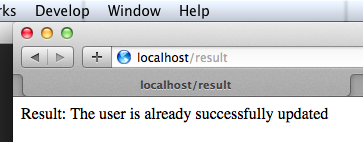
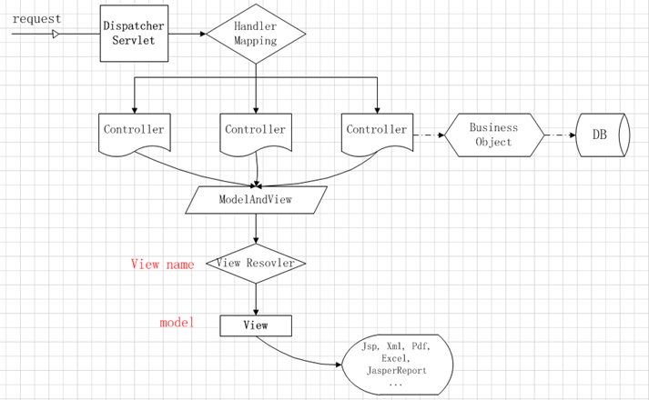
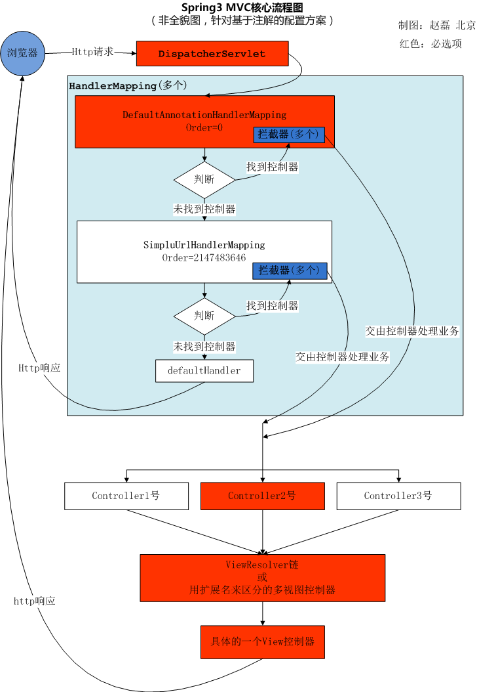

本章主要介绍 Spring MVC 中一些常用的知识点，详细说明请参考官方帮助文档。
@RequestMapping
@GetMapping 等价于 @RequestMapping(method = RequestMethod.GET)@PutMapping 等价于 @RequestMapping(method = RequestMethod.PUT)@PostMapping 等价于 @RequestMapping(method = RequestMethod.POST)@DeleteMapping 等价于 @RequestMapping(method = RequestMethod.DELETE)
@PathVariable 取得 URL 路径中匹配的内容，适合 RESTful 的风格。
A @PathVariable argument can be of any simple type such as int, long, Date, etc. Spring automatically converts to the appropriate type or throws a TypeMismatchException if it fails to do so. You can also register support for parsing additional data types.
1 2 3 4 5 6 7 8 9 10 11 12 13 14 15 16 17 18 19 20 21 22 23 24 25 26 27 28 29 30 31 32 33 34 35 36 37 38 package com.xtuer.controller;import org.springframework.stereotype.Controller;import org.springframework.web.bind.annotation.PathVariable;import org.springframework.web.bind.annotation.RequestMapping;import org.springframework.web.bind.annotation.ResponseBody;@Controller public class ParameterController @RequestMapping("/users/{userId}") @ResponseBody public String one (@PathVariable Integer userId) return userId + "" ; } @RequestMapping("/categories/{categoryName}/products/{productId}") @ResponseBody public String two (@PathVariable String categoryName, @PathVariable("productId") Integer pId) return "categoryName: " + categoryName + ", productId: " + pId; } @RequestMapping("/regex/{text:[a-z]+}-{number:\\d+}") @ResponseBody public String three (@PathVariable String text, @PathVariable Integer number) return "Text: " + text + ", Number: " + number; } @GetMapping("/question-img/{subjectCode}/{imageName:.+}") public void readQuestionImage (@PathVariable String subjectCode, @PathVariable String imageName) ... } }
测试：
@RequestParam 取得 HTTP 请求 中的参数(GET 和 POST 都可以)。
1 2 3 4 5 6 7 8 9 10 11 12 13 14 15 16 17 18 19 20 21 22 23 24 25 package com.xtuer.controller;import org.springframework.stereotype.Controller;import org.springframework.web.bind.annotation.RequestMapping;import org.springframework.web.bind.annotation.RequestParam;import org.springframework.web.bind.annotation.ResponseBody;@Controller public class ParameterController @RequestMapping("/user") @ResponseBody public String findUser (@RequestParam Integer id) return "ID: " + id; } @RequestMapping("/product") @ResponseBody public String findProduct (@RequestParam(value="productId", required=true) Integer id, @RequestParam(value="productName", required=false) String name) return "ID: " + id + ", Name: " + name; } }
测试：
@ModelAttribute 把 HTTP 请求的参数映射到对象，参数名和对象中的属性名匹配的就做映射，不匹配的就不管，此注解可以省略。
1 2 3 4 5 6 7 8 9 10 11 12 13 14 15 16 17 18 19 20 package com.xtuer.controller;import com.xtuer.domain.User;import org.springframework.stereotype.Controller;import org.springframework.web.bind.annotation.ModelAttribute;import org.springframework.web.bind.annotation.RequestMapping;import org.springframework.web.bind.annotation.RequestParam;import org.springframework.web.bind.annotation.ResponseBody;@Controller public class ParameterController @RequestMapping("/user") @ResponseBody public String findUser (@ModelAttribute User user, @RequestParam(required=false) Integer age) System.out.println("Age: " + age); return user.toString(); } }
1 2 3 4 5 6 7 8 9 10 11 12 13 14 package com.xtuer.domain;import lombok.Getter;import lombok.Setter;import lombok.ToString;@Getter @Setter @ToString public class User private int id; private String username; private String password; }
测试：
Forward and Redirect Forward 在 url 前面加上字符串 forward: 即可redirect: 即可
1 2 3 4 5 6 7 8 9 10 11 12 13 14 15 16 17 package com.xtuer.controller;import org.springframework.stereotype.Controller;import org.springframework.web.bind.annotation.RequestMapping;@Controller public class ParameterController @RequestMapping("/forward-test") public String forward () return "forward:/helloworld-springmvc" ; } @RequestMapping("/redirect-test") public String redirect () return "redirect:/helloworld-springmvc" ; } }
测试：
RedirectAttributes 表单提交后一般都会 redirect 到另一个页面，防止表单重复提交。RedirectAttributes 的作用就是把处理 PageA 的结果存储起来，当 redirect 到 PageB 的时候显示 PageA 的结果。
Request 中的参数不能被传递给 redirect 的页面，因为 redirect 是从浏览器端发起一个新的请求。
Normally when we generate an http redirect request, the data stored in request is lost making it impossible for next GET request to access some of the useful information from request.
Flash attributes comes handy in such cases. Flash attributes provide a way for one request to store attributes intended for use in another.
防止表单重复提交的流程 :
1 2 3 4 5 6 7 8 9 10 11 12 13 14 <!DOCTYPE html > <html > <head > <title > Update User</title > </head > <body > <form action ="/update-user" method ="post" > Username: <input type ="text" name ="username" > <br > Password: <input type ="text" name ="password" > <br > <button type ="submit" > Update User</button > </form > </body > </html >
1 2 3 4 5 6 7 8 9 10 11 12 13 14 15 16 17 18 19 20 21 22 23 24 25 26 27 28 29 30 31 32 33 34 35 package com.xtuer.controller;import org.springframework.stereotype.Controller;import org.springframework.web.bind.annotation.RequestMapping;import org.springframework.web.bind.annotation.RequestParam;import org.springframework.web.servlet.mvc.support.RedirectAttributes;@Controller public class ParameterController @RequestMapping("/user-form") public String showUserForm () return "user-form.html" ; } @RequestMapping("/update-user") public String updateUser (@RequestParam String username, @RequestParam String password, final RedirectAttributes redirectAttributes) System.out.println("Username: " + username + ", Password: " + password); redirectAttributes.addFlashAttribute("result" , "The user is already successfully updated" ); return "redirect:/result" ; } @RequestMapping("/result") public String result () return "result.html" ; } }
测试：
访问 http://localhost:8080/user-form ，填写信息，提交表单，处理好后页面被 redirect 到 http://localhost:8080/result 显示操作结果。

Redirect 到另一个 Controller 时获取 RedirectAttributes 里的属性使用 @ModelAttribute
1 2 3 4 5 6 7 8 9 10 11 @RequestMapping("/flash") public String flash (RedirectAttributes redirectAttributes) redirectAttributes.addFlashAttribute("username" , "Biao" ); return "redirect:flash2" ; } @RequestMapping("/flash2") @ResponseBody public String flash2 (@ModelAttribute("username") String username) return "username: " + username; }
获取 Request and Response 想取得 HttpServletRequest 和 HttpServletResponse 很容易，只要在方法的参数里定义后，Spring MVC 会自动的注入它们到参数里。
1 2 3 4 5 6 7 8 9 10 11 12 13 14 15 16 17 18 package com.xtuer.controller;import org.springframework.stereotype.Controller;import org.springframework.web.bind.annotation.RequestMapping;import org.springframework.web.bind.annotation.ResponseBody;import javax.servlet.http.HttpServletRequest;import javax.servlet.http.HttpServletResponse;@Controller public class ParameterController @RequestMapping("/request-response") @ResponseBody public String foo (HttpServletRequest request, HttpServletResponse response) System.out.println(request); return "WoW" ; } }
测试：
读取 header: The @RequestHeader annotation allows a method parameter to be bound to a request header
写入 header: Header 直接写入到 HttpServletResponse，没有注解用来写 header
下面是浏览器发送请求后的 header 信息:
Header
Value
Host
localhost:8080
Accept
text/html,application/xhtml+xml,application/xml;q=0.9
Accept-Language
fr,en-gb;q=0.7,en;q=0.3
Accept-Encoding
gzip,deflate
Accept-Charset
ISO-8859-1,utf-8;q=0.7,*;q=0.7
Keep-Alive
300
1 2 3 4 5 6 7 8 9 10 11 12 13 14 15 16 17 18 19 20 21 22 23 24 25 26 27 28 29 30 31 32 33 34 package com.xtuer.controller;import org.springframework.stereotype.Controller;import org.springframework.web.bind.annotation.RequestHeader;import org.springframework.web.bind.annotation.RequestMapping;import org.springframework.web.bind.annotation.ResponseBody;import javax.servlet.http.HttpServletResponse;@Controller public class ParameterController @RequestMapping("/read-header") @ResponseBody public String readHeader (@RequestHeader("Host") String host, @RequestHeader(value="Accept-Encoding", required=false) String encoding, @RequestHeader(value="Accept-Charset", required=false) String charset) return "Host: " + host + ", Encoding: " + encoding + ", Charset: " + charset; } @RequestMapping("/read-header-error") @ResponseBody public String readHeaderError (@RequestHeader("Host") String host, @RequestHeader("Accept-Charset") String charset) return "Host: " + host + ", Charset: " + charset; } @RequestMapping("/write-header") @ResponseBody public String writeHeader (HttpServletResponse response) response.setHeader("token" , "D4BFCEC2-89E6-40CB-AF9A-B5513CB30FED" ); return "Header is wrote." ; } }
测试：
访问 http://localhost:8080/read-header 成功访问
访问 http://localhost:8080/read-header-error 提示错误，因为 charset 是 required=true 的，在 header 信息里没有 charset，所以报错。但是这个错误如果不了解的话会一头雾水，因为在控制台中没有输出错误的原因
参数错误，类型转换错误等默认在控制台中看不到，也不会返回给浏览器端，要看到错误原因，需要把 Spring MVC 的日志调到 Debug 级别。
Cookie
读取 cookie: The @CookieValue annotation allows a method parameter to be bound to the value of an HTTP cookie
写入 cookie: Cookie 直接写到 HttpServletResponse，没有注解用来写 cookie
1 2 3 4 5 6 7 8 9 10 11 12 13 14 15 16 17 18 19 20 21 22 23 24 25 26 27 28 package com.xtuer.controller;import org.springframework.stereotype.Controller;import org.springframework.web.bind.annotation.CookieValue;import org.springframework.web.bind.annotation.RequestMapping;import org.springframework.web.bind.annotation.ResponseBody;import javax.servlet.http.Cookie;import javax.servlet.http.HttpServletResponse;@Controller public class ParameterController @RequestMapping("/read-cookie") @ResponseBody public String readCookie (@CookieValue("username") String cookie) return "Cookie for username: " + cookie; } @RequestMapping("/write-cookie") @ResponseBody public String writeCookie (HttpServletResponse response) Cookie cookie = new Cookie("username" , "Don't tell you" ); cookie.setMaxAge(1000 ); response.addCookie(cookie); return "Cookie is wrote." ; } }
测试：
访问 http://localhost:8080/read-cookie 报错，因为还没有 cookie，@CookieValue(value="username", defaultValue="") String cookie
访问 http://localhost:8080/write-cookie 写入 cookie
访问 http://localhost:8080/read-cookie 输出 cookie
Session
可以使用 HttpSession 来直接操作 session
同时也提供了操作 session 的注解 @SessionAttributes
HttpSession 的方式什么时候都生效，但是 @SessionAttributes 有时候就不行，如返回 AJAX 请求时设置的 session 无效。所以推荐使用注入 HttpSession 来读写 session 。
@SessionAttributes annotation indicates that in the controller’s methods can be assigned some values to arguments of the annotation. In this example I declared just one session attribute with the name “thought“. That’s mean I can put some object into modelAndView using addObject() method, and it will be added to the session if the name of the object will be the same as the name of argument in @SessionAttributes.
1 2 3 4 5 6 7 8 9 10 11 12 13 14 15 16 17 18 19 20 21 22 23 24 25 26 27 28 29 30 31 32 33 34 35 36 37 38 39 40 41 package com.xtuer.controller;import org.springframework.stereotype.Controller;import org.springframework.web.bind.annotation.RequestMapping;import org.springframework.web.bind.annotation.ResponseBody;import org.springframework.web.bind.annotation.SessionAttributes;import org.springframework.web.servlet.ModelAndView;import javax.servlet.http.HttpSession;@Controller @SessionAttributes({"result"}) public class SessionController @RequestMapping("/write-session") @ResponseBody public String writeSession (HttpSession session) session.setAttribute("username" , "座山雕" ); session.setAttribute("password" , "天王盖地虎" ); return "Session wrote..." ; } @RequestMapping("/read-session") public String readSession () return "helloworld-freemarker.htm" ; } @RequestMapping("/write-session2") public ModelAndView writeSession2 () ModelAndView mav = new ModelAndView(); mav.addObject("result" , "Save session" ); mav.setViewName("user-form.htm" ); return mav; } @RequestMapping("/read-session2") public String readSession2 () return "result.htm" ; } }
测试：
访问 http://localhost:8080/write-session
访问 http://localhost:8080/read-session
Spring MVC 的处理流程
用户向服务器发送请求，请求被 Spring 前端控制 Servelt DispatcherServlet 捕获
DispatcherServlet 对请求 URL 进行解析，得到请求资源标识符（URI）。然后根据该 URI，调用HandlerMapping 获得该 Handler 配置的所有相关的对象（包括 Handler 对象以及 Handler 对象对应的拦截器），最后以 HandlerExecutionChain 对象的形式返回
DispatcherServlet 根据获得的 Handler，选择一个合适的 HandlerAdapter。（附注：如果成功获得HandlerAdapter 后，此时将开始执行拦截器的 preHandler(…)方法）
提取 Request 中的模型数据，填充 Handler 入参，开始执行 Handler（Controller)。 在填充Handler 的入参过程中，根据你的配置，Spring 将帮你做一些额外的工作：HttpMessageConveter： 将请求消息（如 Json、xml 等数据）转换成一个对象，将对象转换为指定的响应信息数据转换：对请求消息进行数据转换，如 String 转换成 Integer、Double 等格式化：对请求消息进行数据格式化，如将字符串转换成格式化数字或格式化日期等数据验证： 验证数据的有效性（长度、格式等），验证结果存储到 BindingResult 或 Error 中
Handler 执行完成后，向 DispatcherServlet 返回一个 ModelAndView 对象
根据返回的 ModelAndView，选择一个适合的 ViewResolver（必须是已经注册到 Spring 容器中的ViewResolver）返回给 DispatcherServlet
ViewResolver 结合 Model 和 View，来渲染视图
将渲染结果返回给客户端
Spring MVC 教程, 快速入门, 深入分析

